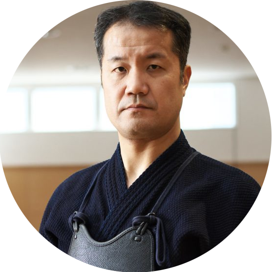
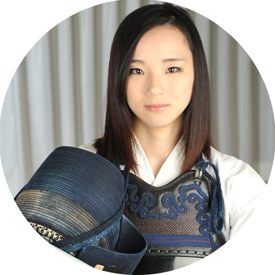

Do Japão, direto para os dojos do Brasil!
Conheça seus Senseis!
Fundador e Sensei
Hanafuda Netto
6º Dan
- 2024 - Kyoto Kendo Butai - 1º Lugar
- 2023 - Nikendo Team Tag - Top 3
- 2023 - Campeonato Municipal de Belo Horizonte - 1º Lugar
- 2022 - Beijing Sino-Japanese Kendo Champioship - 2º Lugar
- 2019 - Nippo-Korean Kendo Champioship - 3º Lugar
- 2019 - Campeonato Estadual de MG - 2º Lugar
- 2018 - Kyoto Kendo Butai - 3º Lugar
- 2018 - Senior Champioship Latin America - 3º Lugar
- 2017 - Campeonato Brasileiro de Kendo - 2º Lugar

Sensei
Ikko Tetsujin
4º Dan
- 2024 - Campeonato Brasileiro de Kendo - 2º Lugar
- 2024 - Takemitsu Nippon Butai - 1º Lugar
- 2024 - Nikendo Team Tag - Top 7
- 2023 - Senior 4th Dan Champioship - 4º Lugar
- 2023 - Campeonato Estadual - 2º Lugar - Time Contagem
- 2022 - Campeonato Municipal Contagem - 3º Lugar
- 2018 - Caompeonato Estadual - 2º Lugar - Time Contagem

Sensei
Hanafuda Hikari
4º Dan
- 2024 - Campeonato Municipal Feminino - 1º Lugar
- 2024 - Nikendo Team Tag - Top 7
- 2023 - Takemitsu Nippon Butai - 2º Lugar
- 2023 - Campeonato Estadual - 3º Lugar - Time BH
- 2023 - Senior 4th Dan Champioship - 3º Lugar
- 2022 - Campeonato Municipal Feminino BH - 2º Lugar
- 2019 - Caompeonato Estadual Feminino - 4º Lugar - Time BH
- 2018 - Hinamatsuri Kendo - 2º Lugar